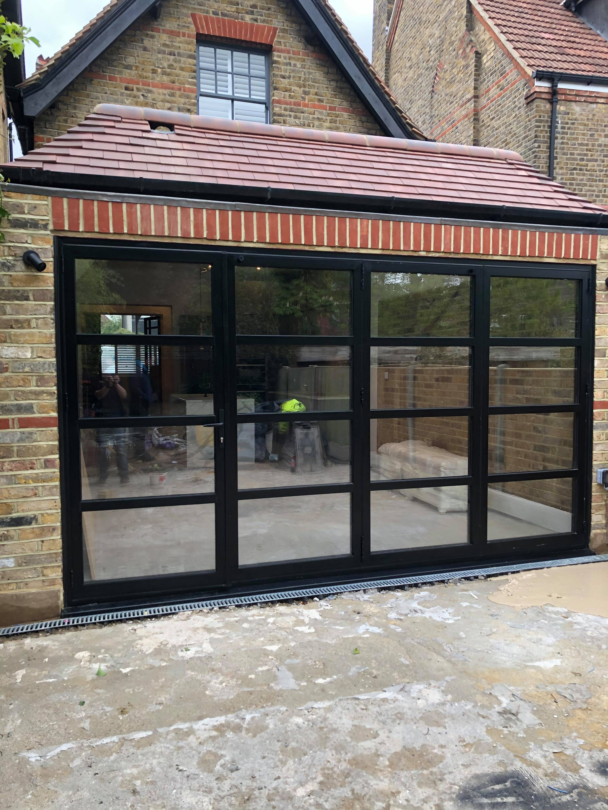
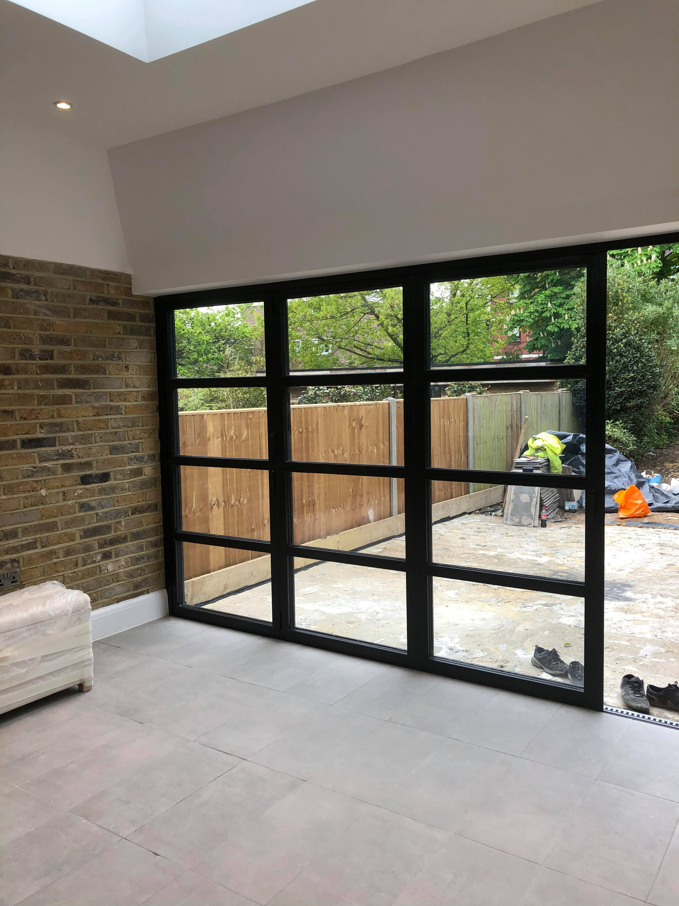

<!DOCTYPE html>
<html lang="en"></html>
  <head>
    <link rel="stylesheet" type="text/css" href="style.css" />
    <title>Willos Builder Clean</title>
  </head>
<nav class="topBar">
  
  <li class="num">Contact Details: 07729395122</li>
  <h1 class="Header">Willos Builders Clean LTD</h1>
  <li class="Em">Email: willosbuildersclean@gmail.com</li>
  </nav>
<body>
  <div class="form4">
    <h2>Professional after builders cleaning sevices</h2>
    <p class="text2">
        Willos Builders Clean Ltd is a Wraysbury (M25/JNC13) company offering a wide
        range of cleaning services for New Build homes throughout all London
        boroughs and anywhere within the M25. 
    </p>
    <p class="line2">Our professional cleaners are
        happy to take on a thorough top-to-bottom deep cleaning service for your
        new home, office or commercial property.
      </p>
    
    
    <p class="text1">
        Our local professional After builders cleaners are well trained and have
        years of experience to provide high maintenance and efficient services
        from construction sites to entire housing development and high rise
        buildings. Detailed cleaning specifications for every site is prepared
        by our managers on every project we undertake in London and the Uk. With
        our portal and dedicated After Builders management team we stay ahead of
        your post-construction cleaning service and ensure you receive
        high-quality cleaning service and a comprehensive low cleaning price. We
        keep our cost to clean a house after construction service cheap and
        affordable.
    </p>
    <div class="Tasks">
        <h3>After Builders Cleaning Checklist</h3>
        <p class="text1">
          Our reliable builder cleaners are up for any task, give us a call for
          any enquiries
        </p>
        <p>This is a selection of our most requested tasks:</p>
        <li>Dusting off all the areas in the property</li>
        <li>Cleaning of carpets, rugs and upholstery</li>
        <li>Vacuuming and mopping hard floors</li>
        <li>Wiping and polishing hard surfaces</li>
        <li>Scrubbing bathtub, toilet and sink</li>
        <li>Cleaning and polishing tiles</li>
        <li>Cleaning doors, door frames and handles</li>
        <li>Cleaning windows, window frames and sills</li>
        <li>Polishing mirrors and windows</li>
        
        
        <li>Cleaning skirting boards</li>
        <li>Removing waste left from the building and renovation work</li>
        <li>Cleaning light fixtures and switches</li>
        <div>
          <h3>Why Choose Willos Builders Clean Ltd</h3>
          <p>When you’re looking for a reliable cleaning company in London to take care of your home or business premises, Willos Builders Clean Ltd offers you the perfect balance of price and quality. You can be sure that our cleaning teams are polite, friendly and hard-working, never putting off a current cleaning task for their next visit.
            Our goal is to establish a long-term relationship with our clients, based on mutual trust and our ability to provide consistently perfect results.
          </p>
          <div class="call">
            <p>Here are a few more reasons to call us right now:</p>
            <li>Free estimates over the phone</li>
            <li>Competitive flat rates starting at £11* per hour (*Subject to location)</li>
            <li>Flexible slots including weekends and bank holidays</li>
            <li>Our local cleaners are fully trained, vetted and insured</li>
            <li>We use eco-friendly solutions and detergents on request</li>
            <li>Our services come with a 100% satisfaction guarantee</li>
            <li>Coverage of all London areas within the M25</li>
          </div>


        </div>
        <div class="info">
          <h3>About Our Cleaners</h3>
          <div class="infoText">
          <p>
            Usually we assign a team of at least two cleaners to each job. We try
            to allocate the same crew to a regular booking in order to ensure a
            consistent service. Our expert cleaners are carefully selected and
            screened and then fully trained to give them a deep understanding of
            products and procedures and help them provide top-quality services at
            all times. They are adept in cleaning various surfaces and all
            textiles, including even the most delicate fabrics. Our professionals
            will clean thoroughly and get rid of any dirt, dust, grime and stains.
            Our teams are equipped with high-end professional equipment provided
            by the leading manufacturers in the industry.
          </p>
          
        </div>

        <nav class="footBar">
          <li>Contact Details:</li>
          <li>07729395122</li>
          <li>Email:</li>
          <li>willosbuildersclean@gmail.com</li>
          
          <li>#willos_builders_clean</li>
          </nav>
      </div>
      
    </html>

      
    
    
</body>
